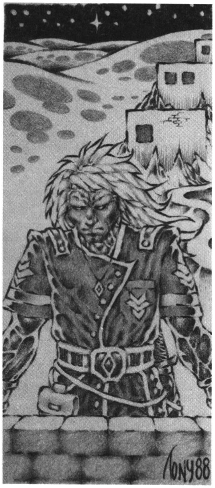

08. Trakoriens historia
Villkor: FV Historia
Arvet från forntiden
Trakoriens historia kan sägas börja med med den Tredje Konfluxen åren 599-598 fO. Konfluxen innebar kejsardömet Jorpagnas fall och den yndariska kulturens undergång.
Vid den tiden befolkades Trakorien till stor del av urfolk och barbarättlingar.
Arvet från Jorpagna
Jorpagna hade sedan 900-talet fO dominerat centrala kontinenten, men kollapsade fullständigt i sviterna av den Tredje Konfluxen.
Riket hade vid den tiden just koloniserat Lasemos och Laabne på västra Palamux, varifrån man planerade en fortsatt erövring av nordhavets öar. Nu fann sig kolonisterna ensamma och övergivna i en kaotisk värld.
Arvet från Yndar
Ännu mer förvirrade var innevånarna i staden Krau-Ki. Hela staden hade under en natt av åska lyfts ur den Yndariska högkulturen i varmhavet på andra sidan världen och dumpats på den kalla klippön Marjura som straff för sin ogudaktiga magi. Även Krau-Kis märkliga öde bestämdes av stjärnornas läge under den Tredje Konfluxen.
Kungariket Cruri på Marjura 598-250 fO
Staden Krau-Ki kallades med tiden Kru-Hri och sedan Cruri, kärnan i ett ondskefullt kungadöme som inte lärde sin läxa utan fortsatte att praktisera nekromanti och åkalla demoner såsom man gjort i Yndar.
Cruri förslavade tidigt de ursprungliga neanderthalstammarna på Marjura.
Cruri och Trinsmyra
På 300-talet fO grundade Cruri livskraftiga kolonier på Chrachz och i Kargom på norra Palamux.
Runt 400 fO byggde Crurerna staden Esach-Rha (nuvarande Isakra) på Trinsmyra, men kom genast i krig med rungler och milacker, ättlingar till de isbarbarer som bosatt sig på ön. Urbefolkningen kuvades aldrig i de tidiga krigen, men lyckades heller inte driva bort inkräktarna. Med tiden blandades istället kulturerna. Ädlingar av blandad crurisk börd byggde fästen i Milackes berg och skapade med tiden egna små furstendömen.
Mörkertiden
De joriska kolonisterna i Lasemos och Laabne på västra Palamux utkämpade under åren 550-250 fO ständigt mindre krig, ty många kände sig kallade till makten.
Grå eminensernas tid i Laabne 310-250 fO
En falang magiker tog makten i Laabne runt 380 fO och uppförde Trakoriens första akademi i staden Voag Aspede. Dessa magiker isolerade sin stad för att få studiero medan striderna fortsatte i Lasemos och på ön Bhannavil.
Magikerna i Voag Aspede var oerhört skickliga, men gick så upp i sitt arbete att de glömde allt annat, också själva livet som de isolerat sig från.
Staden Voag Aspede blomstrade i överdåd och världsfrämmande färger så att ingen utomstående vågade närma sig de lysande tornen vilka skimrade som en drogsjuk dröm vid horisonten. Samtidigt bleknade det övriga Laabne, ty all dess kraft sögs till Voag Aspede och många flydde landet medan andra inte kunde släppa regnbågsstaden med blicken och sakta tynade bort i overksamhet.
Grå eminensernas fall 253-249 fO
Omsider märktes i Lasemosi land hur Laabne sög dess kraft likt en igel, och sändebud skickades till Voag Aspede. Men de grå eminenserna var förblindade av sin konst, ty den var allt som återstod för dem, och de lät förhäxa de utsända.
Då samlades en här under Baskimer Brushane och de grå eminenserna störtades med list sedan Voag Aspede fallit och flera grymma slag utkämpats. Sedan den dagen ligger Laabne grått och öde, men världsfrånvända sekter lär fortfarande gömma sig i trakten.
Baskimer Brushane härskade nu över ett enat Lasemos och fred föll äntligen över landet. Efter striden mot de grå eminenserna bannlystes all magi i Lasemos.
Moskorien koloniseras 290-160 fO
Redan runt 290 fO knöt folken i östra Lasemos vänskapsband med alvfolken i Gwondel Leigû under gemensamma strider mot invaderande svartfolk från vildlandet Klagga. Alverna berättade för människorna om rika slätter österut, och lät kolonister passera skogarna. Kolonisterna trängde snart ut på den Moskoriska slätten och började bruka jorden. De kallade sig klavyker av ”klavys”, som betyder nyckel, ty de hade låst upp dörren till ett förlovat land.
Slätten befolkades sedan urtider av nomadstammar, vilka till en början levde fredligt med nybyggarna.
Klavykerna kände sedan gammalt till bevattningskonsten och fick därför god gröda ur den bördiga jorden så att Moskorien och Fokale snabbt växte i styrka och rikedom.
Cruris undergång 200 fO
Runt år 200 fO hade gudarna återigen tröttnat på staden Krau-Ki och dess hädiska ättlingar. På hög nivå beslöts att Cruris folk inte längre skulle få några barn, och att landet skulle täckas med is under 800 år framåt. Kung Ottar, landets siste härskare, kallade på hjälp från rikets mest framstående magiker, och avrättade dem allt eftersom de misslyckades med att avvärja förbannelsen. Slutligen stod den mäktiga häxan Rirba inför konungen och förklarade att inget kunde stoppa gudarnas vrede, men att förbannelsen kunde väntas ut. När jordblod och svavel åter flödade ur Cruris jord skulle riket återuppstå i all sin glans. Då skulle våren komma efter 800 år av svavelvinter.
Cruri begravdes så under isen.
Skallspräckarsoten i Lasemos 135-131 fO
År 135 fO drabbades Lasemos av den fruktade skallspräckarsoten som får huvuden att jäsa tills de spricker som övermogna frukter.
För att skona Moskorien från smittan, stängde alverna i Gwondel Leigû genast vägen genom skogen. Tyvärr missförstod moskorerna denna välgärning och ilade till Lasemosi hjälp med vapenmakt. Efter några års meningslösa strider försvann sjukdomen och vägen öppnades åter, men förtroendet mellan alvfolk och människor var brutet för all framtid, så även Lasemosi makt.
Klavykiska krigen 130-68 fO
I Moskorien spred kanaler floden Gushars vatten ut över jorden så att den blomstrade utan like. På den varma Fokalerslätten byggde stormän jaktslott, och trädgårdar anlades där fruktträd gav tredubbel skörd.
Med sådant överflöd kunde klavykerna ägna mycken tid åt sitt tänkande och sitt hantverk, så att en högkultur stod fram på slätten mellan Yoh och Albarunzia.
De primitiva jägarfolk, som tidigare varit ensamma herrar på låglandet, förstod inget av bevattningskonst, och eftersom bara lite regn tog sig över bergen i syd och väst, hade den bördiga jorden bara givit dem magra skördar.
Då jägarna nu såg hur klavykerna frodades, blev de avundsamma och ville ha sin jord tillbaka. Många krig utkämpades i dessa dagar mellan folken. På nomadernas sida anslöt sig omsider furstar från bergstrakterna i Nastrôl och det vilda Kargom, ty ej heller de kunde tåla rikedom annat än i egen kista. Bergsfurstarna var av mörkt sinne och drog sig inte för att använda såväl svartfolk som dödgångare i sina härar, men klavykerna motstod dem.
I kriget slöts en bestående allians med tolgulderna, och dessa jättemän har sedan den tiden levt i vänskap med folket på slätten.
Festivalen i HOXOH 68 fO
Efter flera års krig, erbjöds furstarna i Nastrôl en allians med klavykerna mot Kargom. Man samlades i staden HOXOH till förhandlingar om fred. Men den ryktbare illusionisten Shaseluk Dimspride dolde en klavykisk här med magisk genomskinlighet. Under festligheterna störtade soldater fram och dräpte nastrôlerna så att landet tömdes på sina ledare och snart kom under klavykiskt styre.
Denna händelse kallas Festivalen i HOXOH, och som belöning fick Shaseluk Dimspride medel till en illusorisk akademi i staden.
Klavykiska riket
Strax efter festivalen i HOXOH föddes Klavykiska riket bestående av Moskorien, Fokale, Nastrôl och nuvarande Kishatet.
Redan från början instiftades ”rikets kropp”, bodâken, som ett styrande råd av adelsmän under en vald kejsare. Klavykiska rikets huvudstad var i alla tider Fontra Cilor vid Quafachas strand. I Klavykiska riket hade adeln ensam makten, vilket skiljer det från det senare Trakoriska riket där borgarna fått stort inflytande bakom kulisserna.
Eniakens födelse 62-25 fO
Eniaken, den levande svampen, flöt ursprungligen iland i Lasemos från haven i väst. Furstarna i Lasemos var måna om det nya rikets välvilja, och lämnade tillsammans med många andra skänker också en vagnslast av det mystiska, röda trasslet som ingen visste vad det var. Man hade märkt att varelsen växte, och efter mycken stjärnskådan kunde astrologer ana sig till dess mening; att tjäna som gräns vid civilisationens gräns mot det barbariska Kargom. Man planterade under stora ceremonier delar av svampen i Norra Nastrol, där den strax slog rot. Kargomiterna visste inte vad som var på gång, men anföll för säkerhets skull, och bittra slag utkämpades. Efter dessa strider bildades hypherernas munkorden med uppgift att vaka över Eniaken. Strax därpå bildades också de tre andra stora ordnarna så att Nastrol fick sin politiska struktur.
Kristallens sekler
Perioden 50 fO-150 eO på Palamux kallas Kristallens sekler. Då gjordes upprepade misslyckade försök att rensa Kargom från måndyrkare, nekromanti och svartfolk.
Kolonier på öarna
Efter att ha säkrat makten över Palamoxi slättland seglade klavykiska kolonister vidare till Stegos och Paratorna, där städerna Zaroflas, Siola och Melse grundlades.
De heliga svanarnas seglats — en ny era
Året för Odos födelse uppfylldes överallt av mystiska tecken och händelser. I Lasemos dök en märklig farkost från Melukha upp, ett land man dittills bara hört om i sagorna. Melukhierna hade i heliga syner blivit lovade hjälp från sina hjältebröder i norr. Den heliga ön Kymm hade börjat sjunka sedan folket trotsat gudarnas påbud och smidit metallvapen på ön. Man bad nu om hjälp att evakuera öborna, ty melukhierna själva visste blott föga om skeppsbygge, då de sällan handlade eftersom allt redan fanns på deras ö. Denna bön, tillsammans med rika skänker och löfte om evig handel övertygade klavykerna om att de måste visa barmhärtighet. I hast utrustades en gigantisk flotta som gav sig av söderut. Man räddade så tusentals människor ur det sk ”stora be-kymmret”, och händelsen kallas i sångerna för ”de heliga svanarnas seglats”. Sedan denna tid härstammar de mycket lönsamma handelsförbindelser som trakorierna sedemera övertagit från klavykerna.
Kolonierna utanför Trakorien ca 130 eO
Under åren 100- 150 eO ”befriades” Bzegusta från Magilres tyranni för att bli en viktig flottbas inom riket. Staden Torilia grundades på västra kontinenten.
Den heliga Kornella ledde missioner mot fastlandet och grundade staden O under strider mot kungariket Ransard.
Staden O förlorades emellertid snart, och den heliga kvinnan fick en uppenbarelse från havsgudinnan Anxalis med innebörden att klavykerna skulle hålla sig på öarna där hon kunde hålla ett öga dem. Sedan denna tid härstammar trakoriernas stora motvilja mot att etablera sig på fastlandet.
Palamoxi försaltande
Klavykerna bevattnade jorden i Fokale och Moskorien genom att leda ut vatten i ett nätverk av kanaler. Då vattnet dunstade kvarlämnades salt på åkrarna. Eftersom bergen runt Fokalerslätten är mycket saltrika, bland annat bryts bergssalt ur klippan, ledde bevattningen Kolonier på öarna så småningom till att jorden blev allt mindre fruktsam. Kanalerna avlämnade också så mycket slam att floderna fick svårt att ta sig till havet. Med tiden kunde bara korn, som tål mer salt än vete, odlas och nuför tiden ligger större delen av slätten öde. Detta är palamoxernas stora sorg och orsaken till deras ofta dystra sinnen.
Första Ransarderkriget 180-200 eO
När Klavykerna landsteg på Saphyna kom de på allvar i kontakt med det aggressiva kungariket Ransard. Fiendskap uppstod vid första ögonkastet och snart korsades klingor på Gudienerslätten, öns klassiska stridsfält. Ransarderna drevs tillbaka över Matagdebergen, men lyckades hålla Frimbolinerslätten i ytterligare ett par decennier. Klavykerna var helt inställda på att driva bort sina motståndare från Saphyna eftersom de utgjorde ett hot mot sjöfarten i västerled. Ransarderna var å sin sida lika bestämda att stanna kvar eftersom de annars skulle bli instängda i östra nordhavet för all framtid. Först med sjöslaget i Rubakins vik år 199 eO avgjordes kampen till klavykernas fördel.
De galna Milackerna på Trinsmyra 220-300 eO
Milacki enande
Under 200-talets första hälft gjorde palamoxiska nybyggare flera försök att kolonisera södra Trinsmyra, men slogs ständigt tillbaka. Under striderna enades Milacke mot den gemensamma fienden.
Frihetskriget mot Palamux 250-293 eO
Runt år 250 hände så det oerhörda. Den segerrika klavykiska flottan besegrades av en långt underlägsen styrka från Trinsmyra. De snabba katremasserna seglade runt rikets tunga skepp och satte eld på dem med vildeld, en underlig brinnande vätska från Cruri.
Innan man visste ordet av hade horder av rungler, milacker och karker i förbund med isbarbarer från norr landstigit vid HOXOH för att marschera mot huvudstaden. Det visade sig nu hur långt förfallet gått i Moskorien, ty inom en vecka hade inkräktarna erövrat och plundrat Frimbole Olvi medan rikets huvudstyrka fortfarande vaktade Saphyna mot ransarder.
Milackerna, som är ett underligt folk, tyckte sig nu ha lärt klavykerna en läxa och seglade hem igen, men några barboskerstammar blev kvar och bosatte sig i Ziddisbar. Snart samlade riket sina styrkor för att hämnas. Efter några års bittra strider i Kark skildes man som ovänner.
Runt 277 eO valdes Hiatus Neffro, ”den galne Milacken”, till diktator på Trinsmyra och beslöt göra slut på Klavykiska riket en gång för alla. Han lovade i hemliga förhandlingar bort Saphyna till kungarikena Magilre och Ransard om de hjälpte honom anfalla riket. Efter tio års oupphörliga strider hade Hiatus Neffro erövrat slättlanden på Palamux med sina isbarbarer. Som han räknat med, käbblade hans allierade fortfarande om Saphyna. Neffro gick nu istället samman med sina gamla fiender klavykerna för att ”befria” ön. Lärda män tror att hans egentliga motiv var att fortsätta striderna, vilka han älskade över allt annat. Dock blev härföraren besviken, ty både ransarder och magilrer gav sig av frivilligt, slitna och skrämda av Neffros illsinnade rykte. Hiatus Neffro kunde tåga in i Frimbole Olvi utan motstånd, där han i vredesmod lyckades förstöra hela invasionsstyrkan, varpå han lämnade scenen som eremit i Matagdebergen. Utan härförare förlorade trinsmyrerna intresset och seglade hem igen.
Väckelsetiden 304-360 eO
Kastykiska omvändelsen 304 eO
I skuggan av krigen mellan klavyker och trinsmyrer, vaknade på Paratorna en önskan till oberoende. År 304 eO förklarade man sig fritt från det mörbultade Klavykiska riket som efter några lama strider bara kunde sucka uppgivet. Frigörelsen kallas den Kastykiska omvändelsen, ty samtidigt instiftades gudinnan Kastyke som Paratornas officiella skyddsväsen.
Den nybildade nationen, bestående av Bralorge och Karramak, kallade sig Trakorien, av ordet ”traekor”, som betyder ”att andas fritt”.
Det heliga Kishatet grundas 311 eO
På Palamux märktes efter de misslyckade krigen en religiös väckelse, ett behov av att rena sig från det gamla förstockade klavykiska arvet. I staden Frand uppstod Shamashkulten, som snart spred sig som en löpeld. Flera mäktiga sekter och ordnar bildades, och snart höjdes kravet på en religiös stat.
År 311 eO bildades det fristående, heliga Kishatet utan större motstånd. Till att börja med utgjordes Kishatet av staden Frand med omgivningar, men snart utökades det.
Klastobrest Dimvetts seglats 350 eO
Åren 349-350 började Klastobrest Dimvett predika guden Remuntras lära, först på Saphyna och senare på Palamux. Han seglade sedemera bort mot väst med Palamoxi halva flotta för att aldrig återvända. Mer om detta i avsnittet om religion.
Andra ransarderkriget 370-385 eO
Då Klavykiska riket mattades, tog ransarderna tillfallet i akt att åter sticka fram sina ludna trynen ur barbarskogarna. Man landsteg med härar såväl på Saphyna som på södra Paratorna.
I all hast slöt sig trakorierna samman med det nybildade Kishatet, och lyckades efter blodiga strider driva bort inkräktarna, vilka förföljdes i alla väderstreck. Ja, så noggranna var trakorierna att man skickade en mäktig flotta ända till Kishatets gränstrakter för att leta ransarder, trots att dessa aldrig varit i närheten av Palamux. Flottan gjorde Shar Kishatin i Albarunzia så nervös att han skänkte Soblak till trakorierna på det att de inte månde segla vidare norrut.
Dvärgslavar till Kopparbergen 380 eO
Av misstag hade man i förföljandet av ransarder stött på ett mindre dvärgrike nära Klomelliens gräns. Dvärgarna irriterades över intrånget och hugg växlades. Trupper från det heliga Kishatet lyckades ev en slump finna bakvägen in i berget där de tog kvinnor och dvärgyngel till fånga så att krigarna tvingades ge upp. Dvärgarna skeppades nu som slavar till Kopparbergen för att bruka malm åt Kishatet, men snart gjorde de sig fria och grundade ett nytt rike på Palamux, där de fortfarande bor.
Utvecklingstiden 385-450 eO
Trakoriska riket grundas
Trakorien, som med Soblak fått sin första egna koloni, kände sig omåttligt mäktigt efter segern över ransarderna. Man förklarade sig snart som arvtagare till Klavykiska riket, och övertog dess styresform. Nu kallade man sig Trakoriska riket och förklarade i vulstiga deklarationer hur man avsåg försvara nordens ljus mot barbariet. Kletigt smekande kallade man Palamux för sin åldrade mor som nu skulle skämmas bort i evigheters evighet med praliner och siden.
Kriget mot svartfolken
Trots sina stolta deklarationer var Trakorien efter Andra Ransardiska krigen ett slitet land, och man drog sig nu tillbaka för att stabilisera sitt rike.
Den första åtgärden var att näpsa de svartfolk som kryllade över Paratorna. Man inledde ett otrevligt utrotningskrig med alla tillgängliga medel. Svartfolken var betydligt fler till antalet än människorna, men splittrade i små stammar som kunde utplånas en i sänder.
Åålskallarnas ätt 405-530 eO
På Trinsmyra gick man som vanligt sin egen väg. Efter milackernas välde hade svagare härskare skänkt adeln allt större makt, så att någon stat knappast stod att urskilja längre.
Missmötet i Vumbra
Vid minsta kungliga påbud, hade adelsmännen för vana att samlas i lådor till gnyende massor utanför det kungliga palatset. Under ett sådant missmöte i Vumbra året 405 eO, spikade en handlingskraftig härförare vid namn Ganfryd Åålskalle igen adelsmännens klagolådor och kastade dem i havet. När konungen strax därpå gick bort utropade han sig själv till kung och grundade därmed Åålskallarnas ätt.
Fritänkare flyr till Marjura 405 eO
Under den svaga regimen hade märkliga läror om människors lika värde fått fäste på Trinsmyra, men dessa bannlystes av Ganfryd Åålskalle. Fritänkarna flydde till Marjura i norr, där de grundade Arhem och andra kolonier.
Stegosi förmörkelse 440 eO
Under Trinsmyras svaghetstid hade det heliga Kishatet fått ett visst inflytande på ön, och uttryckte nu synpunkter på Ganfryd Åålskalles självsvåldiga styre. Kungen svarade med att förklara ”de storkäftade prelaterna” krig och utrustade i all hast en flotta för att plundra Albarunzia på dess rikedomar innan de kom i säkerhet.
Ön Stegos hade sedan gammalt svurit att försvara Kishatet till havs, men insåg att dess flotta knappast kunde motstå Trinsmyras. Man beslutade därför att själv plundra Albarunzia istället för att lämna dyrbarheterna till andra. Då förräderiet uppenbarades, drabbades de emellertid av Shamashs vrede, och ett permanent mörker lägrade sig över ön. Mörkret ligger än idag, och ingen vet vad som händer på Stegos, eftersom vattnet och luften inte bär några farkoster eller varelser.
Då Ganfryd Åålskalle blev varse Stegosi förmörkelse, stillades hans vrede och kriget kom av sig.
Shaguliterna fördrivs 510 eO
I Åålskalles städning av Trinsmyra ingick att fördriva vissa onda kargomitiska sekter som slagit sig ner på ön. Bland dessa sekter fanns Shaguliterna som flydde till Marjura.
Paratornas storhetstid 450-? eO
Trakoriska riket hade år 460 eO rensat Paratorna från svartfolk och byggt upp en lönsam handel med omvärlden. Man var redo att åter trakassera sina grannar.
Ilibaurien erövras 460 eO
Det oberoende Ilibaurien på norra Paratorna var en ständig nagel i ögat på det stolta riket. Här hade på den egna hemön en löjligt liten landsända besegrat rikets trupper i flera fältslag. Under en fredsperiod tog man istället till list. Den onde alkemikern Astrumal diFoldt anlitades och lanserade opianderkryddan bland ilibarerna, en såväl nedbrytande som vanebildande läckerhet av okänt ursprung. Snart kom Ilibaurien under drogernas välde och kunde erövras utan strid, men landet lider än i dag av svårt drogmissbruk och är riket till liten nytta.
Kolonierna erövras
Efter ett antal förödmjukande förhandlingar, där både hot och mutor nyttjades, överlät klavykerna sina kolonier till Trakoriska riket. Klavykiska riket upphörde i praktiken att existera, och man talar nu istället om Moskorien, Fokale, osv.
Tredje Ransarderkriget 497-507 eO
Nominellt hade Saphyna varit självständigt sedan det Andra Ransarderkriget, men i frånvaro av andra makter hade ransarder åter etablerat sig på Frimbolinerslätten. Nu ansåg trakorierna tiden mogen att driva bort ransarderna en gång för alla och inledde förföljelser. En flotta från Ransard ilade till undsättning och snart var striderna åter i full gång. Trakorierna införlivade Gudienerslätten med riket för att ha ett fast brohuvud på Saphyna, och drev utan större svårigheter tillbaka barbarerna till fastlandet.
Saphyni uppror 520-525 eO
Vissa nationalistiska kretsar på Saphyna ogillade Trakoriska rikets ankomst och samlade en här. Denna här bestod av diverse brottslingar och slavar som matats med en ny drog kallad zombin. Zombinet fick kämparna att lyda varje order utan tvekan, tyvärr också fiendens order, vilket man förbisett. I slaget som kallas ”Ylarnas afton” sökte de två sidorna överrösta varandra för att ta kommandot över den drogade hären. Trakorierna segrade genom den högröstade härolden Skrynk, och det saphynska motståndet mjuknade som en mogen banan, så att hela ön kom under rikets välde och snart införlivades.
Det misslyckade kriget mot Mereld 523 eO
Sedan man övertagit ön Bzegusta från klavykerna föll det sig för Trakoriska riket helt naturligt att erövra grannön Mereld. Detta misslyckades skändligen, ty merelderna var sedan gammalt skickliga magiker. Något egentligt krig kom aldrig till stånd, men de godhjärtade merelderna bad att få missionera till guden Tigwalvans ära på det oupplysta Paratorna och Palamux. Trakorierna trodde denna begäran var segrarens krav och tordes inte neka. Sedan dess sköter Kafrilersekten från Mereld fattig- och sjukvård inom Trakoriska riket, vilket alla är nöjda med.
Invasionen i Kark 530 eO
År 530 invaderade trakorierna södra Trinsmyra och var nu så starka att de knäckte öns motstånd. Åålskallarnas ätt flydde upp bland de otillgängliga bergen i Rung, som ingen enda erövrare någonsin lyckats kontrollera. Lands-delen Kark gjordes till en del av Trakoriska riket, medan Milacke fick behålla sin självständighet.
Resa till Jih-puhn och Tsun-kuo 550 eO
I sina giriga ansträngningar att utsträcka rikets makt utrustar bodâken många långväga expeditioner. Mest av en slump upptäcktes på detta sätt de fjärran länderna Jih-puhn och Tsun-kuo på andra sidan västerhavet.
Ockupation av Arhem på Marjura 595 eO
På slutet av 500-talet eO blev svavel en eftertraktad handelsvara då vinsvavling och andra användningsområden upptäcktes. Trakorierna påmindes om svavelträsken på Marjura och ockuperade staden Arhem med omnejd.
Svavelvinterns slut 610 eO - nutid
År 610 slutar svavelvintern och kungariket Cruri kan åter träda fram ur isen. Hur detta ska sluta återstår att se.
